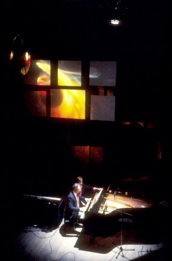

Light is the closest we come to
directly sensing the universal energy. The chance interplay of form and color
can inspire awe and wonder.
|  |
In the past I divided my time between kinetic art and stage work. My stage lighting focused on electro-acoustic music culminating in a series of concerts in the mid 80's with the Electric Symphony Orchestra. These spectacular concerts were a carte blanche for me to expand my stage designs. The light shows created for these events were charged with the energy of rock music, but still maintained a distinct sobriety. The illustration on the top right shows my studio. The picture on the left is from the Almeida Festival in 1985. |
 |
The illustration on the left and above shows concerts presented at the Queen Elizabeth hall at the London South Bank Arts Complex in 1987. This was to be almost the last concerts I lit. I wanted to free myself from the restrictions of being under the control of a director so I decided to focus on kinetic art: a subject in which I could bring together my divided background and combine my knowledge of physics with my love of light. |